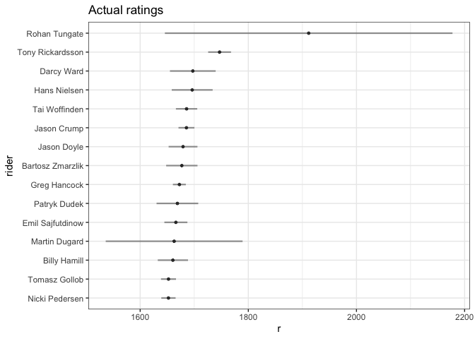
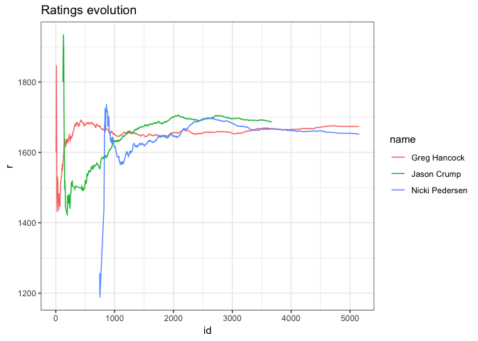

Name sport is an abbreviation for Sequential Pairwise Online Rating Techniques. Package contains functions calculating ratings for two-player or multi-player matchups. Methods included in package are able to estimate ratings (players strengths) and their evolution in time, also able to predict output of challenge. Algorithms are based on Bayesian Approximation Method, and they don’t involve any matrix inversions nor likelihood estimation. sport incorporates methods such glicko, glicko2, bayesian Bradley-Terry, dynamic logistic regression. Parameters are updated sequentially, and computation doesn’t require any additional RAM to make estimation feasible. Additionally, base of the package is written in C++ what makes sport computation even faster.
Install package from CRAN or development version from github.
devtools::install_github("gogonzo/sport")
install.packages("sport", repos = "https://cloud.r-project.org/")Package contains actual data from Speedway Grand-Prix. There are two data.frames:
gpheats - results SGP heats. Column rank is a numeric version of column position - rider position in race.gpsquads - summarized results of the events, with sum of point and final position.
library(sport)
str(gpheats)
#> 'data.frame': 21932 obs. of 11 variables:
#> $ id : num 1 1 1 1 2 2 2 2 3 3 ...
#> $ season : int 1995 1995 1995 1995 1995 1995 1995 1995 1995 1995 ...
#> $ date : POSIXct, format: "1995-05-20 19:00:00" "1995-05-20 19:00:00" ...
#> $ round : int 1 1 1 1 1 1 1 1 1 1 ...
#> $ name : chr "Speedway Grand Prix of Poland" "Speedway Grand Prix of Poland" "Speedway Grand Prix of Poland" "Speedway Grand Prix of Poland" ...
#> $ heat : int 1 1 1 1 2 2 2 2 3 3 ...
#> $ field : int 1 2 3 4 1 2 3 4 1 2 ...
#> $ rider : chr "Tomasz GOLLOB" "Gary HAVELOCK" "Chris LOUIS" "Tony RICKARDSSON" ...
#> $ points : int 2 0 3 1 3 0 1 2 0 2 ...
#> $ position: chr "2" "4" "1" "3" ...
#> $ rank : num 2 4 1 3 1 4 3 2 4 2 ...Data used in sport package must be in so called long format. Typically data.frame contains at least id, name and rank, with one row for one player within specific match. Package allows for any number of players within event and allows ties also. For all games, output needs to be a rank/position in event. Don’t mix up rank output with typical 1-win, 0-lost. In sport package output for two player game is 1-winner 2-looser. Below example of two matches with 4 players each.
To compute ratings using each algorithms one has to specify formula. Form rank | id ~ name is required, which estimates name - rating of a player, by observing outputs - rank, nested within particular event - id. Variable names in formula are unrestricted, but model structure remains the same. All methods are named method_run. formula = rank|id ~ name
glicko <- glicko_run(formula = rank | id ~ player(rider), data = gpheats)
glicko2 <- glicko2_run(formula = rank | id ~ player(rider), data = gpheats)
bbt <- bbt_run(formula = rank | id ~ player(rider), data = gpheats)
dbl <- dbl_run(formula = rank | id ~ player(rider), data = gpheats)
print(dbl)
#>
#> Call: rank | id ~ player(rider)
#>
#> Number of unique pairs: 33003
#>
#> Accuracy of the model: 0.61
#>
#> True probabilities and Accuracy in predicted intervals:
#> Interval Model probability True probability Accuracy n
#> 1: [0,0.1] 0.075 0.211 0.788 562
#> 2: (0.1,0.2] 0.156 0.258 0.741 2229
#> 3: (0.2,0.3] 0.258 0.316 0.683 5246
#> 4: (0.3,0.4] 0.354 0.379 0.619 10887
#> 5: (0.4,0.5] 0.451 0.460 0.539 14122
#> 6: (0.5,0.6] 0.549 0.540 0.539 14036
#> 7: (0.6,0.7] 0.646 0.621 0.619 10887
#> 8: (0.7,0.8] 0.742 0.684 0.683 5246
#> 9: (0.8,0.9] 0.844 0.742 0.741 2229
#> 10: (0.9,1] 0.925 0.789 0.788 562Objects returned by method_run are of class rating and have their own print summary which provides most important informations. -print.sport shows condensed informations about model performance like accuracy and consistency of model predictions with observed probabilities. More profound summary are given by summary by showing ratings, ratings deviations and comparing model win probabilities with observed.
summary(dbl)
#> $formula
#> rank | id ~ player(rider)
#>
#> $method
#> [1] "dbl"
#>
#> $`Overall Accuracy`
#> [1] 0.6062934
#>
#> $`Number of pairs`
#> [1] 66006
#>
#> $r
#> rider r rd
#> 1: rider=Tomasz GOLLOB 0.965 0.002
#> 2: rider=Gary HAVELOCK 0.865 0.116
#> 3: rider=Chris LOUIS 0.351 0.009
#> 4: rider=Tony RICKARDSSON 1.516 0.004
#> 5: rider=Sam ERMOLENKO 0.479 0.037
#> ---
#> 213: rider=Szymon WOŹNIAK 0.173 0.774
#> 214: rider=Kevin WOELBERT 0.318 0.815
#> 215: rider=Igor KOPEĆ-SOBCZYŃSKI -0.377 0.950
#> 216: rider=Zdenek HOLUB -0.409 0.950
#> 217: rider=Charles WRIGHT -0.655 0.774To visualize top n ratings with their 95% confidence interval one can use dedicated plot.rating function. For DBL method top coefficients are presented not necessarily ratings. It’s also possible to examine ratings evolution in time, by specifying players argument.
plot(glicko, n = 15)
plot(glicko,
players = c("Greg HANCOCK", "Tomasz GOLLOB", "Tony RICKARDSSON")
)

Except dedicated print,summary and plot there is possibility to extract more detailed information to be analyzed. rating object contains following elements:
names(glicko)
#> [1] "final_r" "final_rd" "r" "pairs"rating$final_r and rating$final_rd contains ratings and ratings deviations estimations.r contains data.frame with sequential ratings estimations from first event to the last. Number of rows in r equals number of rows in input data.pairs pairwise combinations of players in analyzed events with prior probability and result of a challenge.
tail(glicko$r)
#> id rider r rd
#> 1: 5476 Fredrik LINDGREN 1595.713 7.815778
#> 2: 5476 Tai WOFFINDEN 1675.975 9.294484
#> 3: 5477 Leon MADSEN 1640.216 21.792118
#> 4: 5477 Bartosz ZMARZLIK 1698.159 12.272463
#> 5: 5477 Niels Kristian IVERSEN 1580.907 9.192937
#> 6: 5477 Emil SAJFUTDINOW 1666.851 9.764087
tail(glicko$pairs)
#> id rider opponent Y P
#> 1: 5477 Niels Kristian IVERSEN Leon MADSEN 0 0.4156996
#> 2: 5477 Niels Kristian IVERSEN Bartosz ZMARZLIK 1 0.3375662
#> 3: 5477 Niels Kristian IVERSEN Emil SAJFUTDINOW 0 0.3788837
#> 4: 5477 Emil SAJFUTDINOW Leon MADSEN 0 0.5381477
#> 5: 5477 Emil SAJFUTDINOW Bartosz ZMARZLIK 1 0.4551217
#> 6: 5477 Emil SAJFUTDINOW Niels Kristian IVERSEN 1 0.6211163